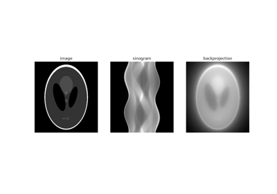

Tutorials¶
The demos of LION, as tutorials: each builds on the last, from the CT
operator to publishing a trained model, and together they cover most of
LION’s API. Each is a Python file with # %% cells, to run whole, a cell at
a time in an editor that knows cells (VS Code, Spyder), or as a notebook
(download it below each page).
They need a GPU (LION’s CT operators use tomosipo and ASTRA) and, from the
data tutorial on, the processed LIDC-IDRI data in LION_DATA_PATH.

Operators: CT geometry, projections and reconstructions
Operators: CT geometry, projections and reconstructions